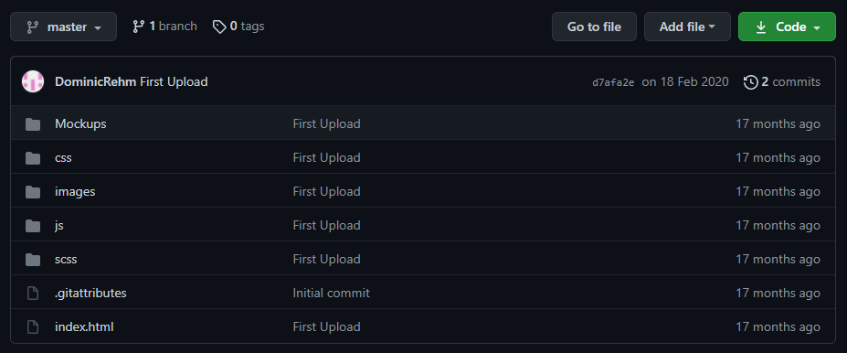
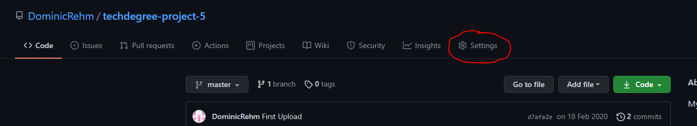
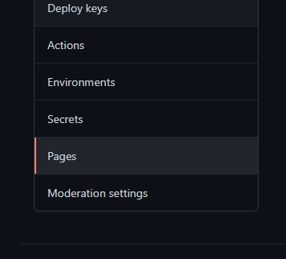
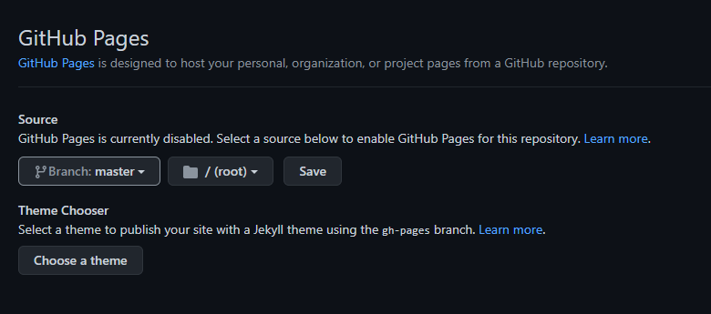
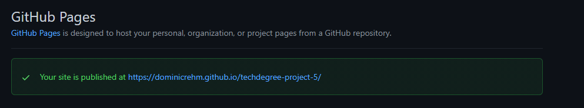

Upload your code to your github repository with a meaningful message.
Go to the settings of your new repository
On the left side you can see the category "pages". Open that menu item
Select the master-branch and save it as /root.
Now you can open your github page -- Preview
